Movie
Release Date
Director
Rating
Genre
Info
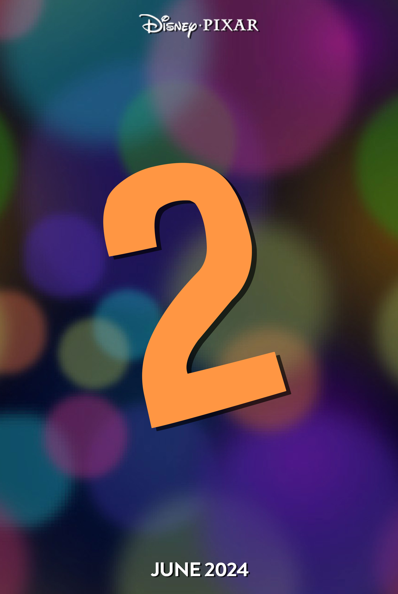
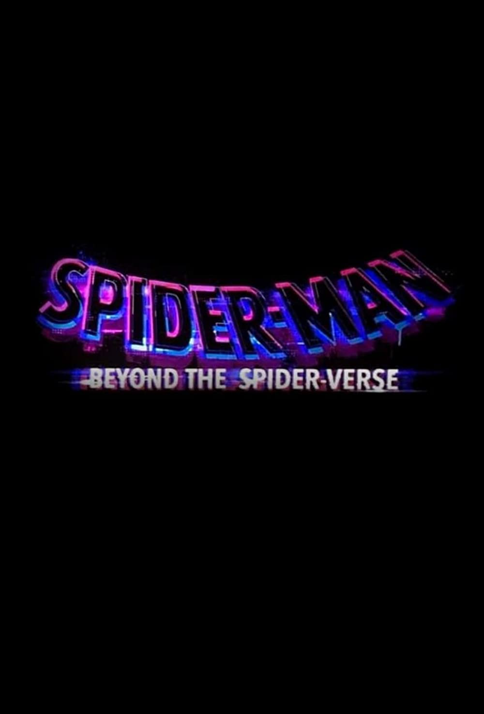

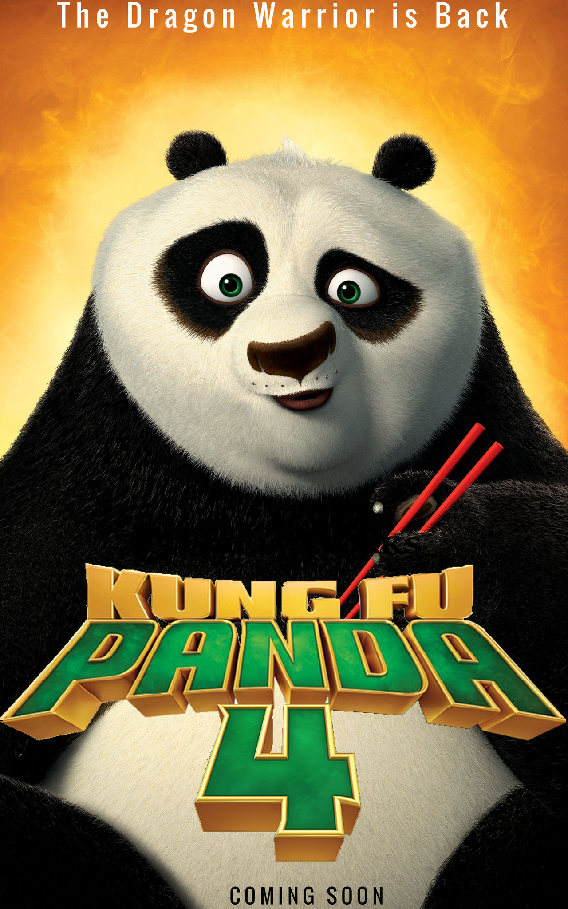
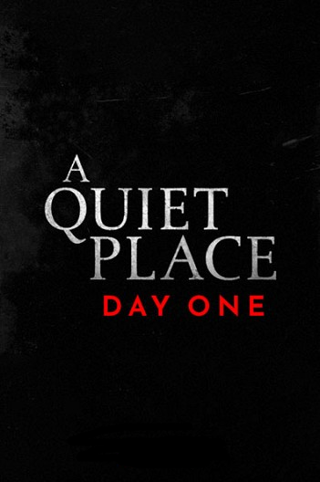
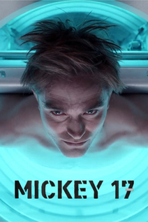
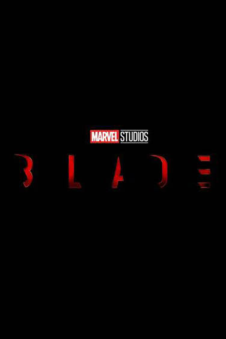
Movie |
Release Date |
Director |
Rating |
Genre |
Info |
|---|---|---|---|---|---|
| Inside Out 2 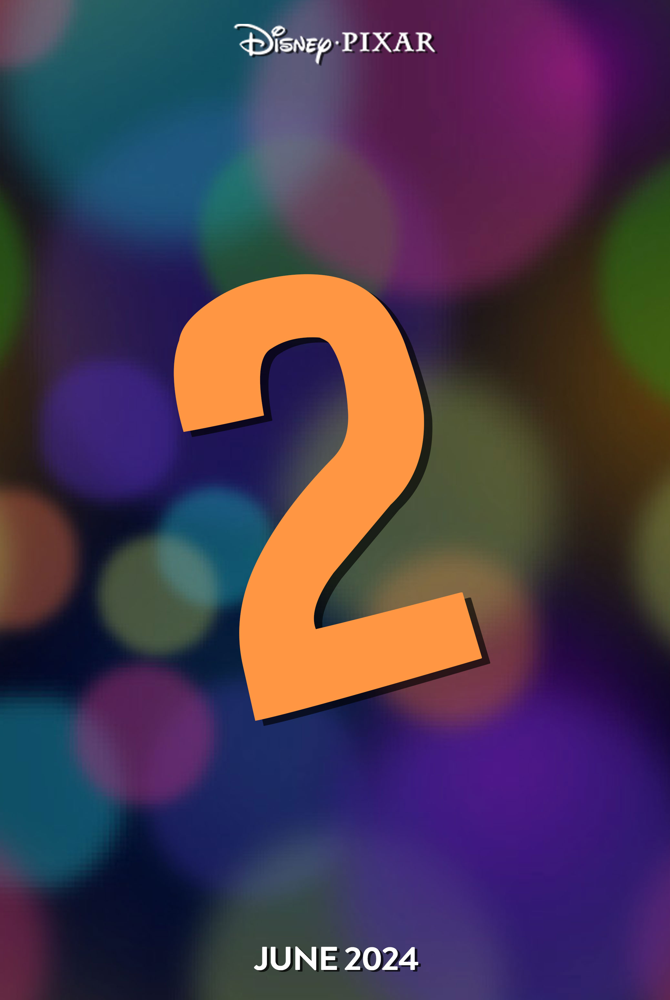 |
June 14 | Kelsey Mann | Pg | Adventure and Comedy | In this film you will get an inside of the mind of a teenager, as Riley will be shown much older. It will also focus on the health of a teenager and the new roller coaster of emotions Riley will face. |
| Spiderman - Beyond the Spider Verse 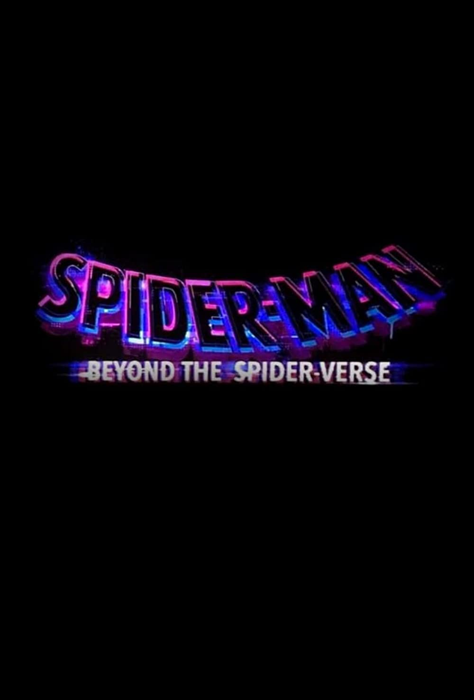 |
March 29 | Joaquim Dos Santos, Justin K. Thompson, Kemp Powers | Pg | Action and Adventure | This is the third Spider Verse film coming out, featuring much more female characters and diversity. Miles Morales will be more adult still figuring out the ways of super hero life. |
| Elio
|
March 1 | Adrian Molina | Pg | Adventure and Animation | Will feature an eleven year old boy that somehow transports across the galaxy. Along the way he meets alien life that mistakens him as the ambassador for earth. |
| Kung Fu Panda 4 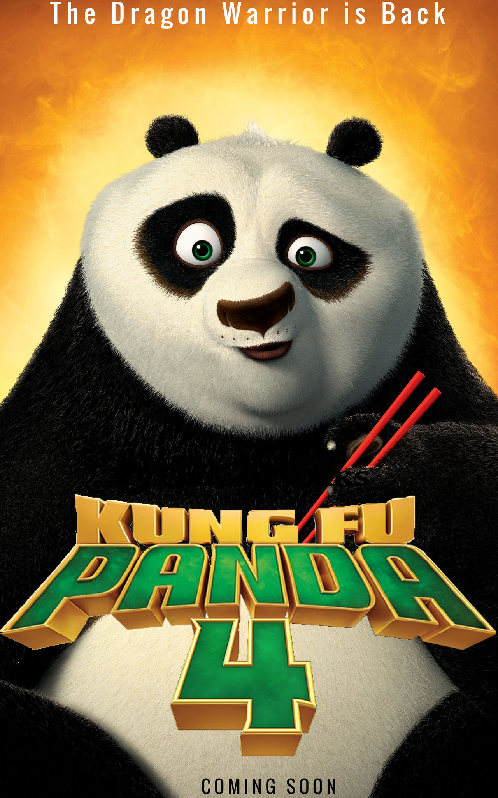 |
March 8 | Joel Crawford | Pg | Animation and Fantasy | You will get to see more of Po as a teacher and mentor to his tribe. They are going to focus on his skill improvement and where he goes in life from here. |
| A Quiet Place: Day One 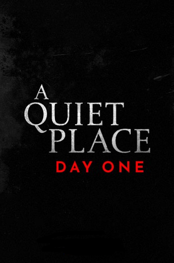 |
March 8 | Michael Sarnoski | Pg-13 | Horror and Sci-fi | This film will sort of be a prequel to that of the other Quiet Place movies. Seemingly showing you how the monsters came about. |
| Mickey 17 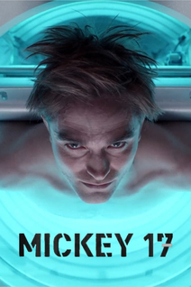 |
March 9 | Bong Joon-ho | Pg-13 | Sci-fi and Drama | Inspired by the book Mickey 7, it seems to be about a man who ends up left for dead on an impossible mission. It is said to dive into the disposable nature of major corporations. |
| Blade 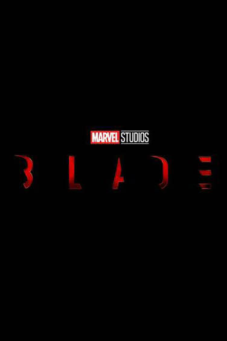 |
September 6 | Yann Demange | Pg-13 | Blade | Will be based on the adventures of vampire hunter Blade and a remake of the original Blade film. It is said to have much darker tones than that of other Marvel films. |